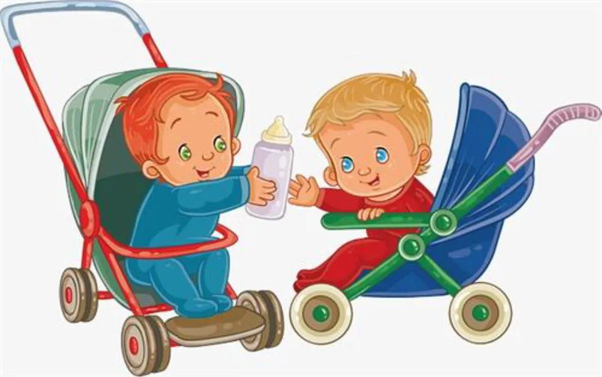
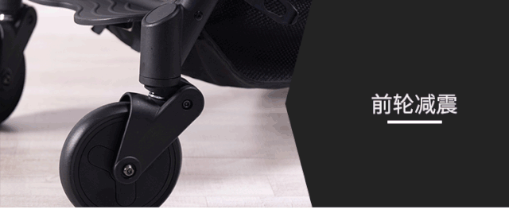
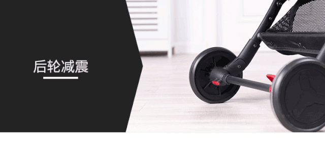
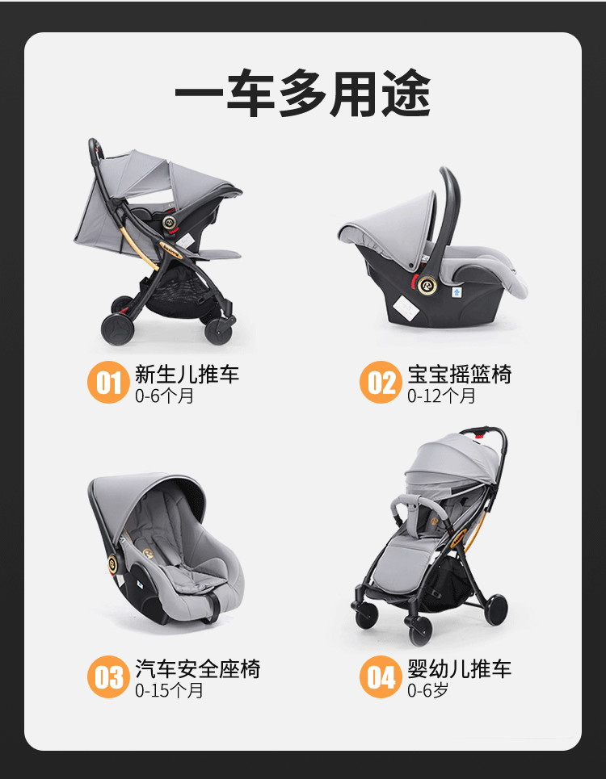
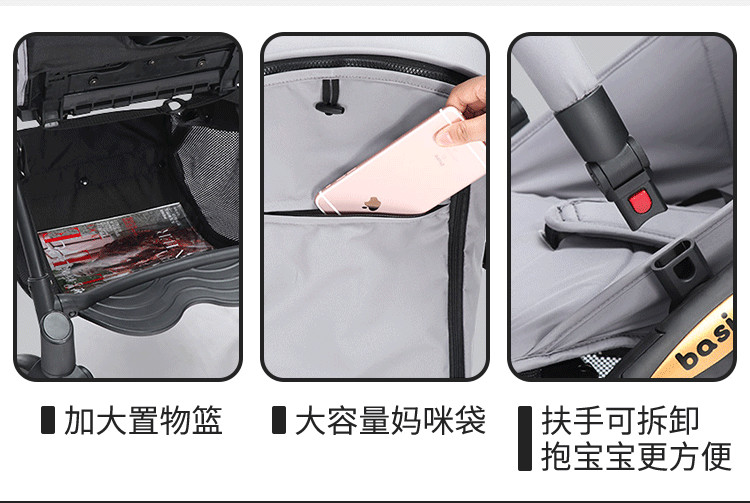
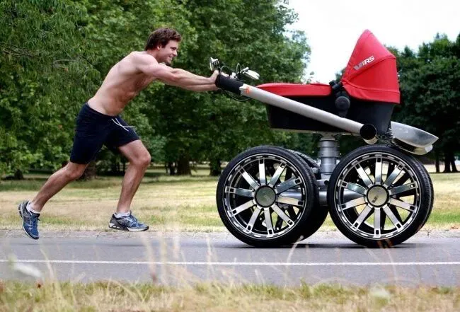
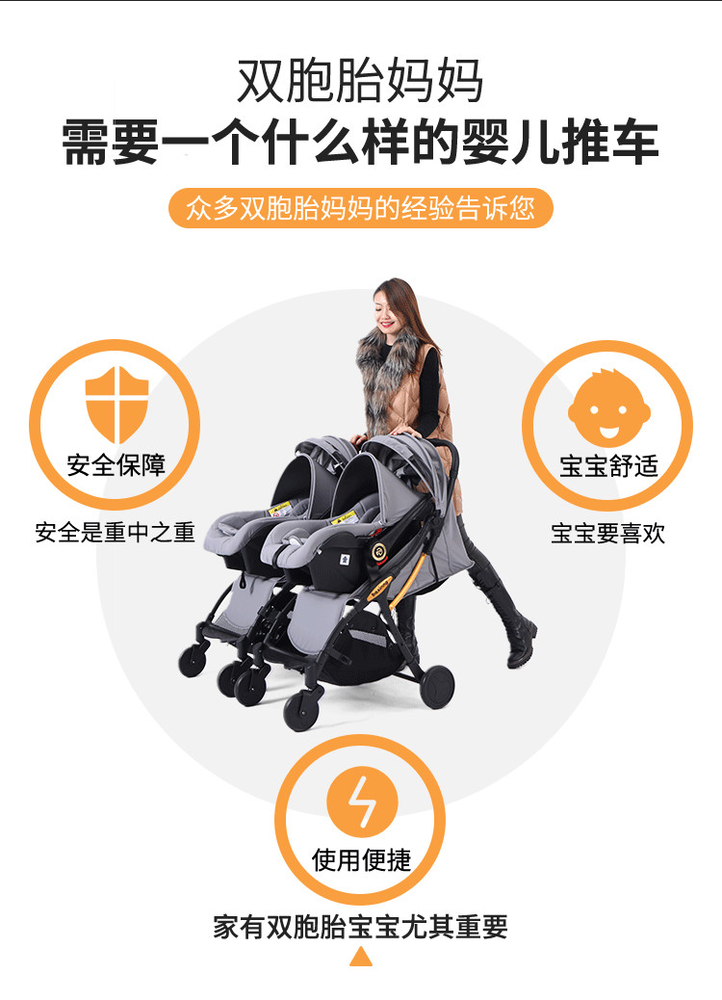
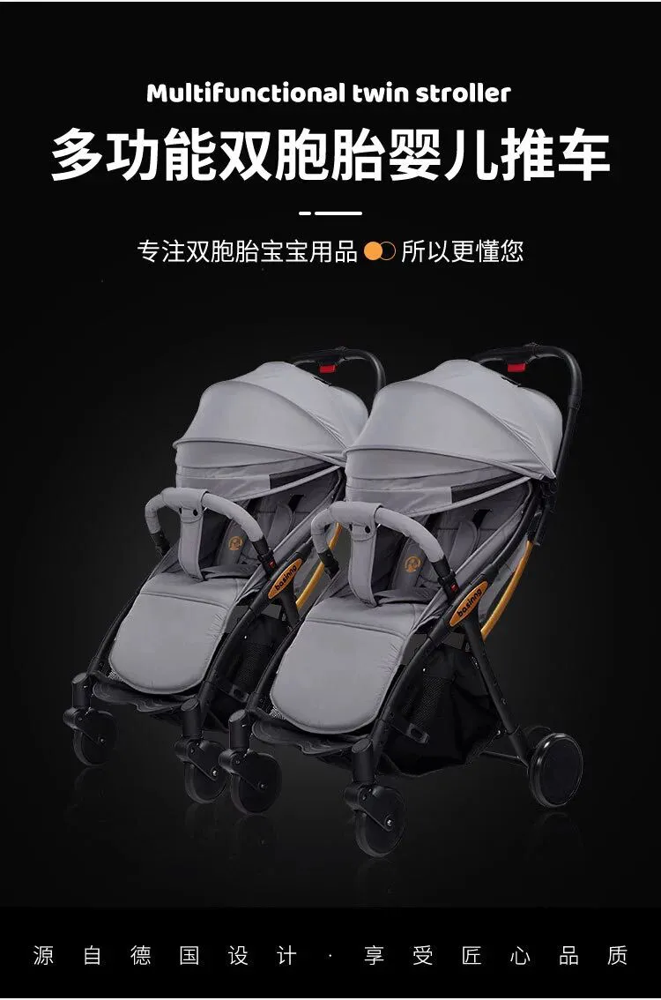
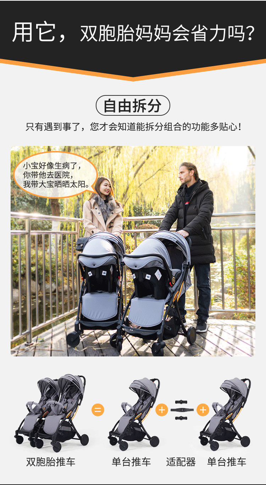

文|圆圈妈
网图|侵删
双胞胎婴儿车，一直是出现在公号后台的高频词，主要围绕一个中心问题：双胞胎宝宝适合哪种婴儿车？买单独两辆还是双胞胎专用款？
为此，我连夜赶出三篇文章分享购买经验，但貌似没能从根本上解决问题，依然不断有小白父母们在选购双胞胎婴儿推车上懵逼着一去不复返！
今天决定把大家的那些小纠结整合起来，探讨下究竟怎么给双胞胎婴儿车才不脑壳疼！
这里只谈3个大方向，若是这3个方面都能捋清楚，那么选单独两辆还是双胞胎专用款？基本上就没有纠结的必要了！
安全性能
婴儿车的安全性能体现在这5方面：
五点式安全带
耐磨减震的前后轮
一脚刹车装置
合理的座兜和扶手
安全稳固的车架
我贪便宜买的婴儿车是EVA发泡轮，不耐磨，不减震，不防滑，用久了就不灵活，你懂的，深圳经常修路，到处都是坑坑洼洼，每次经过颠簸的路面，他们就大哭，尖叫，吐奶，身子打挺，非要抱。
将心比心，我们成人乘车遇到颠簸路面时，胃里会翻江倒海极不舒服，更何况是小婴儿，这种高需求的生物。
强烈建议，应当把转向灵活好使，减震耐磨的车轮列入重点考虑范围！方便推车之人操作顺当，双胞胎宝宝们也坐得舒服，少哭闹！
刹车方面，一定要确保刹车装置是否靠谱，是否管用而不是摆设！婴儿车刹车失灵酿惨剧的新闻已经听过不少了，万不可忽视啊！
建议一脚双刹，这种刹车装置直接与后轮轴承连接，是最安全的机械刹车装置。
刹车装置开启后，那婴儿车就不会在无人看管的情况下自己滚动了，这个贴心的设计真的是双胞胎父母的定海神针。
不要想当然地觉得，宝宝一定会在自己的视线范围内，实际上呢？因为要同时照顾两个小宝宝，很多时候，我们经常会忘东忘西，想事情无法全面，当一个宝宝哭闹时，大家都会情不自禁地拥上去帮忙，却忽视了另外一个宝宝的存在。
任何时候，只要宝宝们在婴儿车上，即使你的推车停在平地上，都需谨记放下刹车装置以保证宝宝的安全了再做下一步！
总之，如果刹车装置不到位，那白给你也不能要！
设计及配饰
双胞胎宝宝2岁前，婴儿车的使用频率较高，一个高质量一车多用途的婴儿车显得格外重要，关键时刻真的可以是你的“救命恩人”。
6个月龄内，调整靠背角度全躺或半躺，推到小区楼下跟街坊邻居打个招呼，来个舒服悠哉的日光浴，或者去附近的公园透透气。
记得第一次带刚满月的圆圈去社区打乙肝疫苗，没有婴儿车，只能全程手抱着，太阳很晒，没办法打伞，3对2狼狈至极！
此处有温馨提示：强烈建议，婴儿车莫要到生娃之后再买，应当在孕期就早早准备好！
6个月后，宝宝们会坐了，调成推车模式，绑上安全带，训练他们独坐着喝奶，或者在喂辅食时，把婴儿车稍微“改造”下，充当BB餐椅。
圆圈5个月大，还不大会抓握，抓奶瓶的手柄老是拿不稳，当人手不足时，我就把他们绑在婴儿车上，用抱枕固定好位置，一人喂俩娃！另一人去煮饭菜。
除了多用途，还要有一个关键点：秒收车！
不管是单胎还是双胎，有娃的人都有一个痛点：个别宝宝不喜欢坐婴儿车，非要被抱着！
但是没有婴儿车又不行，因为小月龄的双胞胎精力有限，需要平躺着眯一会充电才能满血复活。
实践经验表明：外出遛双胞胎，不带婴儿车，不人仰马翻才怪，必定累到你一个月不想出门此时，有一辆秒折叠的婴儿车无疑是雪中送炭！
哭大了非要抱了，那就抱吧！谁让他们是亲生的！反正推车秒折叠！不用弯腰，不用弓背，不用敲敲打打，大拇指轻轻一按就秒收！
另外，注意到没，有些婴儿车不是完全密闭的，而是有可视天窗和全景后视窗的。
几乎每个女人当妈后都会无可避免患上疑心病或强迫症，比如宝宝睡着了，总是会去探下鼻息！明明知道宝宝在推车上欣赏着沿途风光，总是忍不住想看看他们在干嘛！尿了没，睡了没，是哭还是笑！
如果你恰好如描述中一样，那自带可视天窗和全景后视窗的婴儿车绝对是你要考虑的因素之一！
还有一个细节是配饰，如遮阳蓬，置物篮，扶手，餐盘，雨伞，坐垫，凉席，杯架，脚踏板等，这个看家庭各自的需求，不是非必须，可选择性购买即可。
婴儿车一般都会标配置物篮，不需要选太大，差不多大小就行，能容纳两瓶水，一包干湿纸巾和，两三片尿不湿即可。
尽量避免把杂七杂八的东西全扔里面，不然遇到紧急情况需要收车时，还要去清空置物篮，多么让人心累啊！
简而言之，婴儿车设计上的便携性和灵活性，必定是我们双胞胎家庭买婴儿车需要考虑的重中之重！
款式方面
与安全性相比，我觉得款式是最不需要考虑因素，但实际上却是很多人会把款式放在第一位，比如我曾经就是那种人！
市面上的双胞胎婴儿车款式主要有并排式和前后款，各有各的好处。
并排款方便喂奶，出行时便于和两个宝宝同时交流和照顾他们，可促进双胞胎宝宝之间的交流。
前后款不用担心有“路霸”的嫌疑，两个座椅可调节成面对面或前后同方向，可观赏到不同视野的风景。
有些婴儿车还提高了做工上的技术含量，如高景观！
高景观，给人感觉是婴儿车界的越野车，又酷又拉风，非常适合像我这种遛娃时生怕别人不知道我家的是双胞胎的人！
但是高景观的婴儿车意味着重！重！重！我曾经被某品牌的高景观婴儿车迷得神魂颠倒，无奈败给了现实！
仅剩的理智告诉我，高景观婴儿车买回去后，大概率是放在某个角落里吃灰，顶多是推到小区下面刷点存在感，日子久了就会因占用面积巨大而被人百般唾弃！
倘若你真的对款式非常耿耿于怀，难以抉择，那建议你把选择权转让给这么一个人，这个人就是照顾双胞胎的人，使用婴儿车的频率最高的人，让这个人说了算吧！
比如，我家主要是公婆在带娃，他们基本上是在小区里溜娃，或者是推着娃去小区附近的菜市场，公园等，活动范围比较局限。
他们不喜欢合并在一起的婴儿车，对他们来说，那是累赘，是负担，按他们的意思：住的是楼梯房，在3楼，抱着双胞胎，每天搬上搬下，好像在照顾两对双胞胎，更惨！
最后，不得不舍弃了我心仪的婴儿车，从了两老的心愿，买了两部单独的婴儿车！
因此，买双胞胎婴儿车，还得考虑下双胞胎宝宝谁来带，谁带得多。
选什么样的款式要参考下主要照料人的意见，一切全是为了满足照料人的喜好，以便更顺利地照顾好双胞胎宝宝。
如果照料者也拿不定主意，而且在选择上，款式和安全性起冲突了，比如喜欢上某款超酷的并排式婴儿车，但是刹车装置不是很靠谱，那就果断舍弃款式，保安全！
一言以蔽之！
若按重要性来排序，那么安全第一，设计其次，最后才是款式！确定好大方向后，看看预算，不选贵的，不要低价的，只选对的，适合自己的，那就没啥好纠结了！
以上说的好像挺有道理，问题来了，有没有一款以上细节都考虑到的婴儿车？不然说啥都是废话！
问得好，这样的车还真有！
这就是本期团购的主角，一款专为双胞胎设计的婴儿推车！
上周，孖仔帮开展了何以解闷唯有买买买的团购活动，首次开团的是一款专门针对双胞胎宝宝的婴儿床，吸引了130多位宝爸宝妈入群咨询！其中不少宝爸宝妈还问到是否可以开双胞胎婴儿推车的团购！？
天啦，这是哪壶不开提哪壶！？
本来是计划3月初才推出的双胞胎婴儿车团购受疫情影响提前开团了。
这款车最大亮点是能拼接，可拆分，可合并，想分就分，想合就合，随时随地，非常灵活，方便。
已关注
关注
重播 分享 赞
关闭
观看更多
更多
退出全屏
[SVG Icon][SVG Icon][SVG Icon][SVG Icon]切换到竖屏全屏退出全屏孖仔帮已关注
分享视频
，时长00:52
0/0
00:00/00:52
切换到横屏模式
继续播放
进度条，百分之0
播放
00:00
/00:52
00:52
倍速
全屏
倍速播放中
0.5倍 0.75倍 1.0倍 1.5倍 2.0倍
超清 流畅
您的浏览器不支持 video 标签
继续观看
被问了1000次，双胞胎婴儿车买哪种？
观看更多
转载
,
被问了1000次，双胞胎婴儿车买哪种？
孖仔帮已关注
分享点赞在看
已同步到看一看写下你的评论
视频详情
这意味着带双胞胎外出遇到的诸多不便都能迎刃而解，如：
遇到狭窄通道，不用收车，直接拆分，即可通行，省去收车的繁冗动作。
当遇到两宝宝一个睡神，一个睡渣的时候，就拆分开来，睡神继续留家里当“睡美人”，睡渣则得偿所愿出门溜达去。
当一家人去购物时，就组合起来，爸爸推婴儿车，妈妈选购…
...
具备单人婴儿车的优点又克服了双人婴儿车的缺点，真是省心不少，简直不要太完美！
当商家给我介绍这款婴儿车时，瞬间爱上了！这车满足了我带双胞胎出行时的所有幻想，我真希望时光可以倒退5年，然后毫不犹豫买它！买它！买它！
除此之外，这款婴儿车包含了市面上并排双胞胎婴儿推车的所有功能，强大到可解决实际养育双胞胎中出现的各种状况，相当人性化，设计也很到位。
特点一：轻松组合拆分，遛一个娃还是遛两个娃，你说了算！
特点二：一键自动折叠，抱着宝宝也能收车！
特点三：配提篮，是手提摇篮，也是汽车安全座椅，新生宝宝外出更安全！
特点四：质量轻，单车质量6KG，妈妈奶奶都提的动！
特点五：折叠后体积小，单车体积50*25*72，外出好携带！
预知更多详情可进入团购群咨询商家客服。另外，商家为了回报孖仔帮的“知遇之恩”，特意给到咱们号一个粉丝优惠价！
第八代 原价2298元
孖仔帮粉丝价1598元
第八代（含提篮）原价2898元
孖仔帮粉丝价2198元
感兴趣的宝爸宝妈们，可扫码进入团购群，@孖仔帮小助手，获取专属优惠码，尊享粉丝优惠价！把这款黑科技多功能的双胞胎婴儿车买回家！
-END-
今日互动话题
#你给双胞胎买了哪种婴儿车？#
评论区聊一聊呗！
微信公众号：孖仔帮
ID : twinsbang
专注双胞胎孕育，养育，教育经验分享
@www.sgguy.com
[SVG Icon]
扫码关注我们
[SVG Icon]
我知道你在看哟
阅读原文










